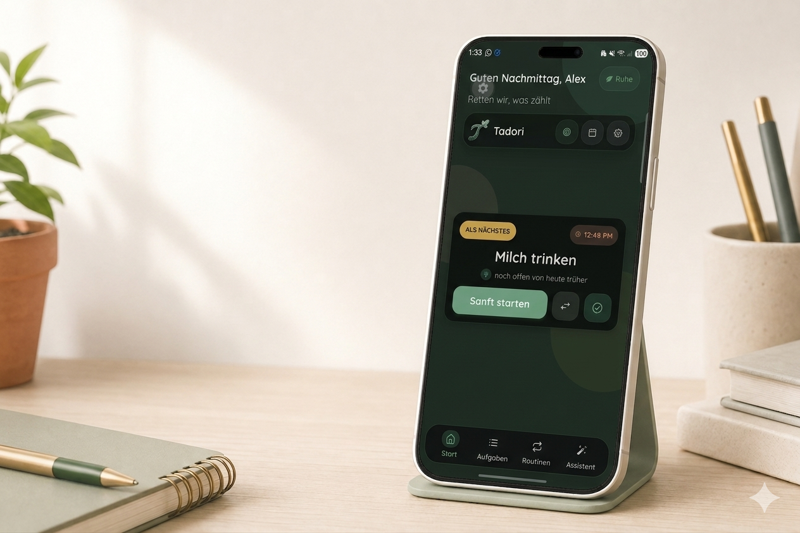

Tasks that do not shout
Capture what matters, keep it readable, and come back to it without guilt when attention drifts.

ADHD-friendly planning
A calm task and routine manager that helps overwhelmed minds find the next small step.
Built for stuck moments
Tadori is designed for days when a normal to-do list feels too loud. It keeps tasks, routines, reminders, notes, and assistant context close at hand without turning your day into a performance score.
What it helps with
Capture what matters, keep it readable, and come back to it without guilt when attention drifts.
Build repeatable rhythms for mornings, chores, focus sessions, and shutdowns without making missed days feel like failure.
Ask for help in your own words. The assistant can talk, plan, or help execute, while keeping responses short when Calm Mode is on.
Calm Mode
Calm Mode reduces density, simplifies wording, removes heavy shadows, and keeps assistant replies to one sentence so the screen feels easier to enter.
One clear next action
Gentle language, never blame
Reduced visual noise
Privacy by design
Tadori is local-first. Core tasks, routines, reminders, notes, and assistant state are designed to live on your device. Account services are for identity, subscriptions, and entitlement checks.
Read the full privacy policyFree users do not need a network connection for core app functionality.
Supabase is used for authentication, profile, subscription, and entitlement data.
Assistant context is sent only when you choose to use assistant features.
Tadori does not sell personal information or turn private tasks into ads.
iOS, Android, and web
Tadori is being shaped around calm routines, local-first storage, and assistant support that respects the language you actually use.
Contact Tadori